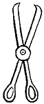
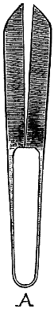
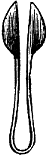
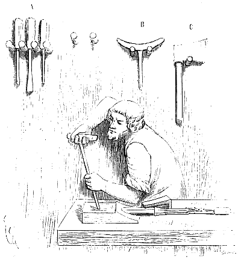

Eugène VIOLLET le DUC
Dictionnaire raisonné du mobilier.

Figure 1.CISEAUX s. m. (cisiax, chisel, cisailles, cisel, escherpie, force, forcesces, forcettes, forghes, forsselle, fisel, tézoires). Les ciseaux à deux branches tranchantes réunies par un axe, et terminées par deux anneaux dans lesquels on passe les doigts, sont représentés dans des vignettes du Xe siècle (fig. 1). Cependant la forme la plus ordinaire donnée à cet outil d'un usage si fréquent, est, pendant le moyen âge, celle que reproduit la figure 2. Ce sont les forces. Deux lames tranchantes comme deux couteaux passent l'une sur l'autre et sont rendues solidaires par une double tige formant ressort A. En appuyant les doigts et la paume de la main sur ces deux tiges, on fait glisser les deux tranchants l'un sur l'autre. Ces ciseaux sont encore en usage dans l'extrême Orient, et sont employés chez nous pour tondre les draps pour couper le poil des chevaux. Des ciseaux de ce genre, plus petits (fig. 3) sont fréquemment représentés sur des miniatures des XIIIe et XIVe siècles. Nous en avons trouvé plusieurs fragments dans les fouilles du château de Pierrefonds, lesquels n'ont que 12 centimètres de longueur. Les ciseaux forces ou à deux branches, servant aux dames, étaient renfermés dans des étuis de fer ou de cuir gaufré. Les barbiers se servaient de ciseaux et de rasoirs. Ciseau, au singulier était et est encore un outil long, tranchant à son extrémité aplatie, et muni d'un manche de bois. Les menuisiers se servaient de cet outil dont les tranchants sont plus ou moins larges, pour évider les mortaises, entailler le bois, etc. La figure 4 représente un menuisier travaillant sur son établi un morceau de bois retenu par le valet. Il se sert d'une longue gouge à manche en béquille pour préparer une mortaise. En A, sont suspendus des ciseaux de diverses formes ; en B est une tarière ; en C, une cognée ou hache pour équarrir les bois. On voit que l'outillage de ces ouvriers ne s'est guère modifié.

Figure 2.
Figure 3.
| Figure 4. |  |